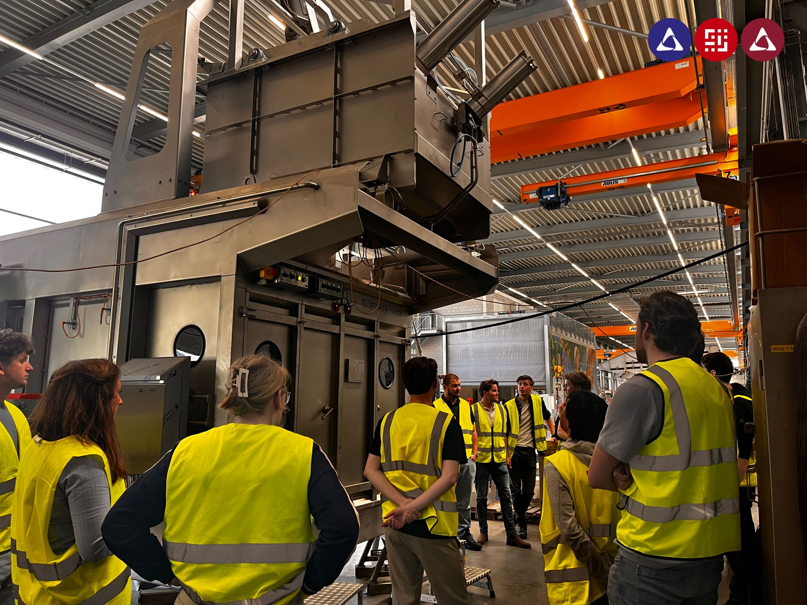
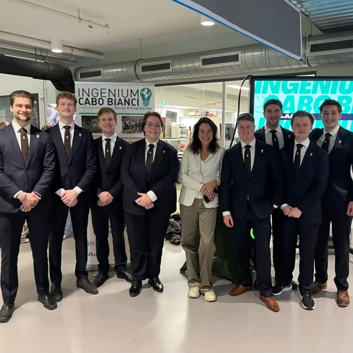
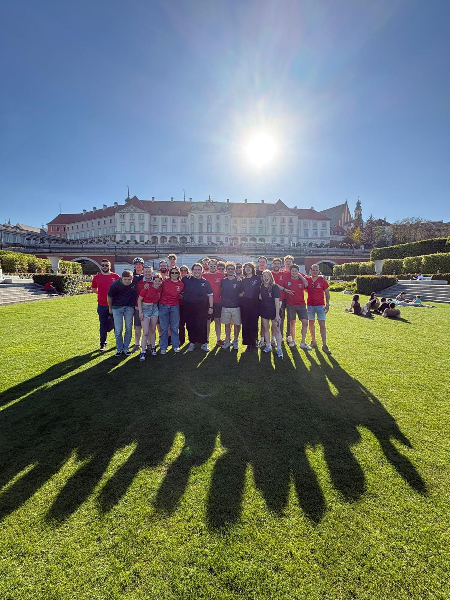
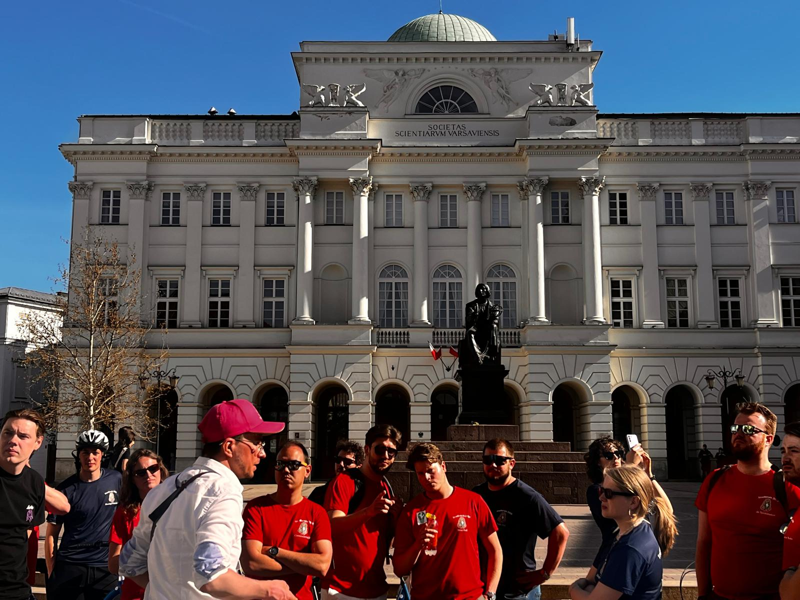

BESTUURSJAAR / INGENIUM CABO BIANCI / 2025–2026
Studenten en bedrijven
met elkaar verbinden.
Van september 2025 tot september 2026 was ik Public Relations bij Ingenium Cabo Bianci. Ik onderhield het contact met partners en bedrijven en organiseerde activiteiten waarin studenten en het werkveld elkaar konden ontmoeten.

- 2
- netwerkdagen georganiseerd
- ±35
- bedrijven per netwerkdag
- 2025–2026
- een jaar in het bestuur
01 / MIJN ROL
Een jaar verantwoordelijkheid
Ingenium Cabo Bianci is de instituutsvereniging Design & Engineering van de Hogeschool Utrecht. Naast mijn technische studie nam ik een jaar lang verantwoordelijkheid voor de relaties tussen de vereniging en het bedrijfsleven.
Over de verenigingHet aanspreekpunt voor partners
Als Public Relations had ik contact met alle partners en bedrijven waarmee de vereniging samenwerkte. Ik beheerde de partnercontracten, onderhield de relaties en organiseerde activiteiten tussen bedrijven en onze studenten. Daarbij hoorde ook het voeren van gesprekken over de samenwerking en de bijbehorende afspraken.
02 / PARTNERS & CONTRACTEN
Onderhandelen en kennis vastleggen
Ik voerde de contractonderhandelingen met partners en slaagde erin de partnerbijdragen te verhogen. Dat was de eerste verhoging in tien jaar. Daar ben ik trots op: het betekende dat ik het gesprek over bestaande afspraken durfde aan te gaan en een concreet resultaat voor de vereniging bereikte.
Daarnaast maakte ik een partnerdossier met de partners waarmee de vereniging had samengewerkt. Zo legde ik de partnergeschiedenis vast als basis voor toekomstige samenwerkingen.

03 / NETWERKDAGEN
Twee dagen vol ontmoetingen
Ik organiseerde twee netwerkdagen, met per dag ongeveer 35 bedrijven. Studenten konden daar kennismaken met het werkveld en rechtstreeks contact leggen met bedrijven. Voor mij kwamen daarin partnercontact, afstemming en de organisatie van een evenement samen.
Voor de netwerkdag maakte ik ook een promovideo. Die geeft een indruk van het evenement.

04 / STUDIEREIS
De studiereis terug op de agenda
Een van mijn mooiste herinneringen is het helpen organiseren van de studiereis. Na drie jaar organiseerden we die opnieuw. Samen met anderen bijdragen aan een reis voor de vereniging was voor mij een bijzonder onderdeel van het bestuursjaar.


Wat dit jaar mij bracht
Dit bestuursjaar gaf mij ervaring met het onderhouden van zakelijke relaties, onderhandelen en organiseren. Ik droeg verantwoordelijkheid voor afspraken met externe partijen en werkte tegelijk samen met mijn medebestuursleden. Die ervaring neem ik mee in mijn werk als engineer: niet alleen de techniek begrijpen, maar ook afstemmen met de mensen eromheen.
Meer weten over mijn bestuursjaar?
Neem contact op